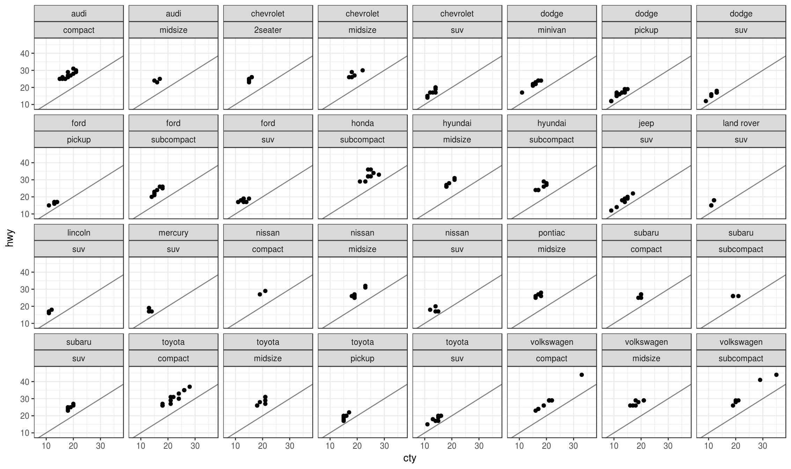

Trelliscope
Trelliscope is a visualization approach based on the idea of “small multiples” or “Trellis Display”, where data are split into groups and a plot is made for each group, with the resulting plots arranged in a grid. This approach is very simple yet is considered to be “the best design solution for a wide range or problems in data presentation”. Trelliscope makes small multiple displays come alive by providing the ability to interactively sort and filter the plots based on summary statistics computed for each group.
The trelliscopejs R package is an interface for creating Trelliscope displays with the goal of providing methods that are convenient to use in traditional visual / analytical workflows. For example, the package provides methods that allow you to easily generate Trelliscope displays from ggplot2 or “tidy” workflows.
At the core of the trelliscopejs is a JavaScript library, trelliscopejs-lib, which provides the interactive viewer for the displays, and the R package is an htmlwidget around this library, meaning that it is easy to share your displays whether through embedding in an RMarkdown document / notebook or simply sending the resulting html file to someone or hosting on the web.
To quickly get a feel for trelliscopejs, here’s a screen capture of it in use:
Getting Started
Installation
trellscopejs is currently available on Github. The package is in beta status as we continue to hone in on the best R interface, but it is stable and ready for people to try out. So please do!
devtools::install_github("hafen/trelliscopejs")Any other package that you see in this document that is not already installed along with trelliscopejs will be available on CRAN and can be installed with install.packages().
facet_trelliscope
For ggplot2 users, the easiest way to get quick results with trelliscopejs is with the function facet_trelliscope(). If you are familiar with faceting in ggplot2 using facet_wrap(), you can easily transform your static faceted plot into an interactive one by swapping out facet_wrap() with facet_trelliscope().
To illustrate, let’s look at some fuel economy data from the mpg dataset available in the ggplot2 package:
library(trelliscopejs)
library(ggplot2)
library(dplyr)
glimpse(mpg)Observations: 234
Variables: 11
$ manufacturer <chr> "audi", "audi", "audi", "audi", "audi", "audi", "...
$ model <chr> "a4", "a4", "a4", "a4", "a4", "a4", "a4", "a4 qua...
$ displ <dbl> 1.8, 1.8, 2.0, 2.0, 2.8, 2.8, 3.1, 1.8, 1.8, 2.0,...
$ year <int> 1999, 1999, 2008, 2008, 1999, 1999, 2008, 1999, 1...
$ cyl <int> 4, 4, 4, 4, 6, 6, 6, 4, 4, 4, 4, 6, 6, 6, 6, 6, 6...
$ trans <chr> "auto(l5)", "manual(m5)", "manual(m6)", "auto(av)...
$ drv <chr> "f", "f", "f", "f", "f", "f", "f", "4", "4", "4",...
$ cty <int> 18, 21, 20, 21, 16, 18, 18, 18, 16, 20, 19, 15, 1...
$ hwy <int> 29, 29, 31, 30, 26, 26, 27, 26, 25, 28, 27, 25, 2...
$ fl <chr> "p", "p", "p", "p", "p", "p", "p", "p", "p", "p",...
$ class <chr> "compact", "compact", "compact", "compact", "comp...We might be interested looking at highway vs. city miles per gallon for each manufacturer and class of vehicle:
qplot(cty, hwy, data = mpg) +
geom_abline(alpha = 0.5) +
xlim(7, 37) + ylim(9, 47) + theme_bw() +
facet_wrap(~ manufacturer + class, nrow = 4, ncol = 8)
The effect of vehicle class on mpg measurements is apparent, although it is more difficult to tell if within each class there are significant differences in the distributions between manufacturers. There are of course many ways we can visualize this data to look into these things, but this example is mainly for illustration of usage. Another feature that we notice from looking at the plot is that the range of highway and city mpg is larger for some classes / manufacturers than others.
To create the same plot with Trelliscope, swap facet_wrap() for facet_trelliscope():
# with facet_trelliscope:
qplot(cty, hwy, data = mpg) +
geom_abline(alpha = 0.5) +
xlim(7, 37) + ylim(9, 47) + theme_bw() +
facet_trelliscope(~ manufacturer + class, nrow = 2, ncol = 4)A simple change! The output will look something like this:
Go ahead and experiment with the interactive controls of the plot above. You can click the fullscreen button in the bottom right if you want more space. The question mark icon in the upper right corner will give you more information about how to use the viewer.
Here we used a different layout of rows and columns to illustrate Trelliscope’s pagination. In the viewer you will see that there are 8 panels shown per page, and that you can use the “prev” and “next” buttons to page through the panels. You can change the layout in the “Grid” controls. Also, we can now filter the panels based on various summaries that were computed for each panel.
For example, we might want to only look at panels for the “compact” class so that we can compare all manufacturers for this class without being distracted by the others. Or we might want to sort the panels by mean city mpg. You can see what variables are available opening the “Filter” or “Sort” controls.
You can see some of these controls in action in the video above, and we’ll discuss more about how these summaries are computed below. If you click the question mark icon in the upper right of the viewer, you can learn more about the controls and how to use them. Feel free to explore.
Note that Trelliscope can be useful even for trivial faceting with smaller displays. For example, suppose we want to compare the distribution of city mpg for each class:
qplot(class, cty, data = mpg, geom = c("boxplot", "jitter")) +
ylim(7, 37) + theme_bw()
Here, the side-by-side boxplots are essentially a trellis display in that we are looking at the same plot for each class. It might be more interesting if the boxplots were sorted by city mpg mean. While this can be done programmatically with ggplot2, we can create essentially the same plot with Trelliscope with no extra effort and interactively change how the panels are sorted as we wish.
qplot(class, cty, data = mpg, geom = c("boxplot", "jitter")) +
facet_trelliscope(~ class, ncol = 7, height = 800, width = 200,
state = list(sort = list(sort_spec("cty_mean")))) +
ylim(7, 37) + theme_bw()In this display, the panels are by default sorted by mean city mpg, but you can open the “Sort” sidebar and rearrange the panels as you wish.
This example brings up a few more options for facet_trelliscope(). First, you can specify the height and width of the panels (in pixels). While these dimensions are relative based on the size and layout of the viewer, they control the aspect ratio of the plot which is very important. Another option shown in this example is the specification of the default sort order through the state parameter. This is likely to become much more straightforward to specify in the future so I won’t go into detail here.
For more options, see the documentation for facet_trelliscope().
“tidy” Interface
In addition to facet_trelliscope(), this package comes with a more generic trelliscope() method that fits naturally into “tidy” workflows involving dplyr or tidyr.
One of the most common uses for dplyr is grouping data frames and computing summaries for each group. A typical workflow is to compute summaries, visualize them, and then determine the next step of the analysis based on what is seen. Often, however, summaries can mask interesting behavior in the data that is occurring at a deeper level. For example, a summary of mean city mpg per manufacturer and class doesn’t capture the variability of the measurements, the outliers, number of obserations, etc. We can capture these behaviors with additional summaries, but visualizing the detailed data from which the summaries were computed is often very enlightening.
dplyr
Speaking of computing summaries, let’s compute some for the mpg data with dplyr:
mpg %>%
group_by(manufacturer, class) %>%
summarise(
mean_city_mpg = mean(cty),
mean_hwy_mpg = mean(hwy))Source: local data frame [32 x 4]
Groups: manufacturer [?]
manufacturer class mean_city_mpg mean_hwy_mpg
<chr> <chr> <dbl> <dbl>
1 audi compact 17.93333 26.93333
2 audi midsize 16.00000 24.00000
3 chevrolet 2seater 15.40000 24.80000
4 chevrolet midsize 18.80000 27.60000
5 chevrolet suv 12.66667 17.11111
6 dodge minivan 15.81818 22.36364
7 dodge pickup 12.05263 16.10526
8 dodge suv 11.85714 16.00000
9 ford pickup 13.00000 16.42857
10 ford subcompact 15.88889 23.22222
# ... with 22 more rowsBut now let’s add another “summary” - a plot object! Let’s make a plot of the raw data from which the summaries were computed. We’ll use rbokeh here, although you can use whatever visualization system you’d like.
library(rbokeh)
d <- mpg %>%
group_by(manufacturer, class) %>%
summarise(
mean_city_mpg = mean(cty),
mean_hwy_mpg = mean(hwy),
panel = panel(
figure(xlab = "City mpg", ylab = "Highway mpg",
xlim = c(7, 37), ylim = c(9, 47)) %>%
ly_points(cty, hwy,
hover = data_frame(model = paste(year, model),
cty = cty, hwy = hwy))))
dSource: local data frame [32 x 5]
Groups: manufacturer [?]
manufacturer class mean_city_mpg mean_hwy_mpg panel
<chr> <chr> <dbl> <dbl> <list>
1 audi compact 17.93333 26.93333 <S3: rbokeh>
2 audi midsize 16.00000 24.00000 <S3: rbokeh>
3 chevrolet 2seater 15.40000 24.80000 <S3: rbokeh>
4 chevrolet midsize 18.80000 27.60000 <S3: rbokeh>
5 chevrolet suv 12.66667 17.11111 <S3: rbokeh>
6 dodge minivan 15.81818 22.36364 <S3: rbokeh>
7 dodge pickup 12.05263 16.10526 <S3: rbokeh>
8 dodge suv 11.85714 16.00000 <S3: rbokeh>
9 ford pickup 13.00000 16.42857 <S3: rbokeh>
10 ford subcompact 15.88889 23.22222 <S3: rbokeh>
# ... with 22 more rowsHere we create an additional plot “summary” using a special function, panel(), which wraps our plot object in a list and tags it so that when we create our trelliscope display it will know which column to use for the plot.
Note that the resulting “panel” column is just another column of the summary data frame – a “plot summary”.
Now we can pipe this to trelliscope():
d %>%
trelliscope(name = "city_vs_highway_mpg", nrow = 2, ncol = 4)The arguments to trelliscope() are very similar to that of facet_trelliscope(). All trelliscopejs displays must have names. In the ggplot2 examples above, if a name is not specified, it is inferred from the ggplot2 object.
Looking at this example, this is a conceptually very interesting way to think about what we are doing with faceted plots. As noted, we are creating plots as “summaries”, and using other summary statistics to help us navigate the space of these plots. “Summary plots” based on summary statistics coupled with detailed “plot summaries” of the raw data from which summaries are computed is a powerful combination.
Although the facet_trelliscope() approach with ggplot2 is usually more concise and elegant, I tend to prefer this tidy approach. First, there is more flexibility in what plotting library you use (you can still use ggplot2, of course). But I prefer the flexibility of being able to shape the data for each subset in the way I want for plotting (group first and reshape rather than specify the grouping with the “facet” functions).
Control Over Cognostics
Summaries that are used to navigate a Trelliscope display have a special name, “cognostics”. This is a term coined by John Tukey that you can read more about here. The trelliscopejs package has some convenience functions for specifying cognostics that help describe their behavior in the Trelliscope viewer. One of the most useful attributes is a cognostics description that helps the user navigating the displays in the viewer know what the summary statistics that they are looking at mean.
Here we create the same display as above, but we use the cog() function to wrap our summaries, providing a custom description that will be used in the viewer.
mpg %>%
group_by(manufacturer, class) %>%
summarise(
mean_city_mpg = cog(mean(cty), desc = "Mean city mpg"),
mean_hwy_mpg = cog(mean(hwy), desc = "Mean highway mpg"),
panel = panel(
figure(xlab = "City mpg", ylab = "Highway mpg",
xlim = c(7, 37), ylim = c(9, 47)) %>%
ly_points(cty, hwy,
hover = data_frame(model = paste(year, model),
cty = cty, hwy = hwy)))) %>%
trelliscope(name = "city_vs_highway_mpg", nrow = 1, ncol = 2)You can look at the documentation for cog() to see what other options are available.
tidyr
Another way to create trelliscope displays in “tidy” workflows is using group_by() with nest():
library(tidyr)
d <- mpg %>%
group_by(manufacturer, class) %>%
nest() %>%
mutate(panel = map_plot(data,
~ figure(xlab = "City mpg", ylab = "Highway mpg") %>%
ly_points(cty, hwy, data = .x)))
d# A tibble: 32 × 4
manufacturer class data panel
<chr> <chr> <list> <list>
1 audi compact <tibble [15 × 9]> <S3: rbokeh>
2 audi midsize <tibble [3 × 9]> <S3: rbokeh>
3 chevrolet suv <tibble [9 × 9]> <S3: rbokeh>
4 chevrolet 2seater <tibble [5 × 9]> <S3: rbokeh>
5 chevrolet midsize <tibble [5 × 9]> <S3: rbokeh>
6 dodge minivan <tibble [11 × 9]> <S3: rbokeh>
7 dodge pickup <tibble [19 × 9]> <S3: rbokeh>
8 dodge suv <tibble [7 × 9]> <S3: rbokeh>
9 ford suv <tibble [9 × 9]> <S3: rbokeh>
10 ford pickup <tibble [7 × 9]> <S3: rbokeh>
# ... with 22 more rowsThis output looks similar to the output we created using summarise(), but we have been able to preserve the original data for each group, allowing us more flexibility in passing the data to other functions that might compute additional summary cognostics to be used in our display.
Here, a function map_plot() is a wrapper for purrr’s map() function that applies the map and tags the resulting column so that when we create our trelliscope display it will know which column to use for the plot. This is similar to panel() but suitable for application to an entire list-column as in the case of nest() %>% mutate() rather than to each individual group as in the case of summarise().
We can now pipe this into a call to trelliscope():
d %>%
trelliscope(name = "city_vs_highway_mpg")Note that since the original data is preserved, trelliscope() detects this and computes automatic cognostics for the variables in the nested data frame data. Currently these automatic summaries are simply means if the variable is numeric, and the value of any categorical variable that is fixed within each group. The same is done for facet_trelliscope() as you may have noticed above. We will be adding more automatic cognostics in the future, particularly geared toward extracting cognostics based on the context of what is being plotted (see “upcoming work” below).
We will continue to work on the “tidy” interface to see if there are more simple or useful ways to do things.
Collections of Displays
While the examples shown so far create one-off displays, it is possible to build and maintain a collection of Trelliscope displays that are bundled together in the same viewer. This is useful for tracking and sharing multiple displays in once place, and for future functionality which will allow the ability to show panels from multiple displays created from the same grouping side by side.
To achieve this, you can simply specify a path pointing to a directory where you would like multiple displays to be organized, as an argument to facet_trelliscope() or trelliscope(). Any display created will be placed inside this directory and an inventory of displays will be maintained and will be available to select from in the viewer. Note that you can also use the group argument to help organize multiple displays into groups.
Using the path argument even when not creating a collection of displays is a good idea when you want your display to persist or if you want to control wher it is so you can share it.
Modifying Displays
Functions will be added in the future that allow you to treat a display as an object and modify its properties (state, name, cognostics, location, etc.) without re-creating the display every time.
Embedding / sharing
While all of the examples so far have created a single application that fills the window of your viewer pane or web browser, you can embed multiple trelliscope displays inside of RMarkdown documents or RMarkdown Notebooks. When using trelliscopejs in RMarkdown documents, each display is embedded within the flow of the document (and dimensions can be controlled in the usual way), but an additional “fullscreen” button appears in the bottom right corner allowing toggling between full window mode. In RMarkdown Notebooks, however, you do not get the fullscreen option because Notebooks embed htmlwidgets as iframes rather than as an integrated part of the page.
Note that if you want to embed a plot in an RMarkdown notebook, you must specify self_contained = TRUE in your call to facet_trelliscope() or trelliscope(). This causes all of the plot dependencies to be embedded in an html page instead of saved as separate files and then loaded as the viewer needs them. This will hopefully change in the future, but self_contained = TRUE should be avoided whenever possible because especially when the number of panels is large, it’s much more efficient to save the panels as separate files and load them on demand rather than embed them all in the page and wait for them to load at the beginning.
trelliscopejs displays are also easy to share as standalone apps on the web through Github or a simple web server. For example, some of the examples from this document have been made available through Github (see here, here, and here).
Low-Level Functions
trelliscopejs provides several low-level functions useful for building new interfaces. I will add more documentation for these in the future, but they are used as the building blocks for facet_trelliscope() and trelliscope() and examples of their usage can be found in the source code for these functions.
Examples
Here are a few more interesting examples of Trelliscope. You can check out my blog for upcoming posts on other interesting displays.
Gapminder data
The “gapminder” R package contains an excerpt of the Gapminder data on life expectancy, GDP per capita, and population by country. Below we create a simple trelliscope plot that shows life expectancy over time for each country. We increase the aspect ratio by decreasing the width of the plot so that changes over time are more pronounced visually.
library(gapminder)
gapminder %>%
group_by(country, continent) %>%
nest() %>%
mutate(panel = map_plot(data,
~ figure(ylim = c(10, 95), toolbar = NULL, width = 300) %>%
ly_points(year, lifeExp, hover = .x, data = .x) %>%
theme_axis("x", major_label_orientation = 45))) %>%
trelliscope(name = "gapminder_lifeexp", nrow = 2, ncol = 6)Or with ggplot2:
qplot(year, lifeExp, data = gapminder) +
xlim(1948, 2011) + ylim(10, 95) + theme_bw() +
facet_trelliscope(~ country + continent, nrow = 2, ncol = 7, width = 300)Here is the resulting display:
If you’d like to interact with this display, try sorting primarily on life expectancy and /or filtering by continent to start, and see if you can find anything interesting.
The data being plotted is fairly simple – we see a usually steady increase in life expectancy over time, with varying mean by country. However, the eye is able to quickly catch deviations from the normal pattern such as the dips in Rwanda and Cambodia or the peaks in life expectancy in several African countries in the late 80s / early 90s with life expectancy decreasing after. 142 countries is almost small enough that you might stick all of them on one static trellis display, but the added functionality of filtering and sorting helps navigate the displays in an interactive query-driven manner.
Housing data
While the power of small multiples often lies in making rapid comparisons across many panels, it can also be useful to study individual subsets of data over a large space of subsets. A good example of this is with data available in the “housingData” package.
This package has a dataset, “housing” that gives the monthly median list and sold price for residential homes by US county, provided by Zillow. Let’s take a look at the median list price over time by county.
Here, we are going to compute our own custom summary “cognostics”, including the slope of a fitted line, the median list and sold price, the number of non-NA observations, and a special “href” cognostic, which will provide a link to Zillow showing the homes for sale in the county.
For this one I would recommend using rbokeh over ggplot2 simply because of the time it takes to generate the panels with ggplot2.
library(housingData)
lm_coefs <- function(x, y)
coef(lm(y ~ x))
d <- housing %>%
group_by(county, state) %>%
summarise(
slope = cog(lm_coefs(time, medListPriceSqft)[2], desc = "list price slope"),
mean_list = cog(mean(medListPriceSqft, na.rm = TRUE), desc = "mean list price / sq ft"),
mean_sold = cog(mean(medSoldPriceSqft, na.rm = TRUE), desc = "mean sold price / sq ft"),
n_obs = cog(length(which(!is.na(medListPriceSqft))),
desc = "number of non-NA list prices"),
zillow_link = cog_href(
sprintf("http://www.zillow.com/homes/%s_rb/",
gsub(" ", "-", paste(county, state)))[1],
desc = "zillow link"),
panel = panel(
figure(xlab = "time", ylab = "median list price / sq ft", toolbar = NULL) %>%
ly_points(time, medListPriceSqft,
hover = data_frame(time = time, mean_list = medListPriceSqft)))
) %>%
filter(n_obs > 1) %>%
trelliscope(
name = "list_vs_time",
desc = "monthly mean list price vs. time for 2984 US counties from 2008–2016",
state = list(labels = c("county", "state")))Here is the resulting display:
Here we used the default of a single panel per page. While we can increase the grid size and make comparisons across counties, we are mainly interested in what is going on within each county. Because of this, we also did not fix the axes of every panel to have the same limits. Generally, you will want to do this as it makes comparisons across panels much more meaningful.
By simply paging through the panels, which by default are not very meaningfully sorted alphabetically by county and then state, we begin to get a feel for the data. The first 3 panels exhibit quite a bit of variation, while the fourth, Ada County, ID appears to be much more smooth, with a pronounced drop and rise in home prices over the course of the decade. We will see this kind of pattern in many other counties. Simply mindlessly paging has already given us some insights. Continuing on, we see Adams County, CO exhibiting a slight decrease in list price followed by a sharp incline from 2012 onward in what looks like about a 50% jump over 4 years. Certainly not all counties are the same when it comes to their home price history or whether or not they were effected by the housing crisis.
If you keep looking through you will see some counties with truly bizarre patterns that in some cases call data integrity into question (notice how several counties have a severe change point between July and August 2011, for example).
It is also fun to use this display to investigate the trend of home prices around where you live. You can do a regex filter on your county’s name or simply filter on your state and look at all the counties arranged by price or slope.
Another interesting way to look at the dislays is sorted on the slope, while filtering out counties that have a small number of observations. In which counties is real estate booming / busting?
This display works well as an app for consumers to play with to explore home prices, and it was nearly effortless to create it. However, if we are doing modeling or analysis of this data, exploring the detail in this simple display gives us plenty to think about in terms of what we might do next.
Why
Why Small Multiples
The power of small multiples has hopefully been evident through some of the examples shown so far. However, it is worthwhile talking about why they are useful so that you know when you might want to use them.
Simple to make
Creating small multiple plots, particularly with trellicopejs, is as simple as specifying how to break up the data and what to plot for each subset. It’s easy to do and it’s quick, which are very attractive qualities for exploratory data analysis, where not every idea sticks and you need to be able to rapidly iterate.
Efficient to consume
“The reader can quickly learn to read an individual chart and apply this knowledge as they scan the rest of the charts. This shifts the reader’s effort from understanding how the chart works to what the data says. That’s a worthy goal in all data presentation. Small multiples enable comparison across variables and reveal the range of potential patterns in the charts.” (Zach Gemigagni).
“Small multiples are economical: once viewers understand the design of one slice, they have immediate access to the data in all the other slices… as the eye moves from one slice to the next, the consistency of the design allows viewers to focus on changes in the data rather than on changes in graphical design.” (Edward Tufte, Visual Display of Quantitative Information).
Harness the human brain
The human brain is remarkably adept at finding patterns, and having many examples to look at simultaneously helps differences stand out even more.
A ProPublic article on small multiples delves a bit more into why this is the case:
“The reason we can make comparisons so easily is because these small multiples take advantage of the built-in capabilities of our visual system. Specifically, something called preattentive processing – cognitive operations that can be performed prior to focusing attention on any particular region of an image… Our brains aren’t like scanners, they throw away most of what the eyes see. But they are good at perceiving simple visual features like color or shape or size, and in fact they do it amazingly fast without any conscious effort. That means we can tell immediately when a part of an image is different from the rest, without really having to focus on it. Our minds are really good at spotting one or two differences when everything else is the same.”
Even when not looking for anomalous or “strange” behavior in data, small multiple plots can do a good job of revealing subtle features of a dataset.
Avoids overplotting and allows more detailed views
Even if we are not using small multiples to find visual features that stand out, they are useful because they help eliminate overplotting. A lot of data in a small space can be confusing for visualization consumers, and small multiples break that data up into pieces that are displayed independently in a grid, allowing for greater detail of the data being plotted in each grid cell, particularly when these cells can be paginated and displayed at a higher resolution.
The ability to slice data into many plots also helps deal with higher dimensional data. Small multiples handle higher dimensions by using one or more of the variables to determine how to break the data up, and then for each subset plotting the data for one or two variables. In most cases this is much more effective than 3d visualization, and can scale to higher dimensions than 3. One needs to look no further than library(lattice); example(xyplot) to see this idea in action.
Experience
If it counts as a final argument, experience has shown small multiples to be extremely useful in practice. This is not true just for me, but for several visualization experts.
For example, Edward Tufte said “for a wide range of problems in data presentation, small multiples are the best design solution.”
Another expert to look to is Bill Cleveland, who is one of the minds behind Trellis Display and who uses it extensively to this day in many noteworthy analyses.
Not that my opinion counts nearly as much as these two, but on a personal note, I learned to appreciate the power of small multiples while I was a student of Bill Cleveland. While visualization was not the main topic of research in my graduate studies, in all of the applied work I did during that time (and since), small multiples have been at the forefront of nearly every interesting discovery.
Why Trelliscope
We are trying to design trelliscopejs in such a way that if you are already sold on using small multiples, you should see no reason why to not use trelliscopejs to generate Trelliscope small multiple displays.
Keep in mind that the main addition that Trelliscope brings to small multiples is the ability to interactively sort and filter panels of a small multiples display based on “cognostic” summaries of the data.
Easy to specify
Small multiple plots are already easy to create in R with packages like ggplot2 or lattice. As we’ve seen in examples above, it is not really any more work to create a small multiples plot with trelliscopejs, particularly when cognostics are automatically computed for you.
Interactivity for free
A really nice feature of Trelliscope is that you get interactivity for free. In statistical graphics, particularly exploratory data analysis, interactivity is sometimes difficult to achieve because it usually requires a lot more time and work than simple static graphics. The audience for the visualizations is usually ourselves, and we are in a hurry to see what’s in the data or how well our model is working, and are not willing to put in hours or days of time on some interactive feature when we know we may discard the plot quickly. Often our plots are “interactive” in that we can rapidly create new static plots faster than we can come up with any interaction to do so for us. But if interactivity is easy and comes for free, there’s no reason not to use it.
A nice feature of Trelliscope interactivity is that the interaction paradigm is the same for every display. Instead of creating many different apps that users might need to figure out how to use independently, once they learn how to use one Trellscope display, they are set (see “displays as apps” section below).
Scalable
Perhaps one of the most unrealized features of small multiples, and one we are trying to tackle with Trelliscope, is the natural fit small multiple plots have with big data. Often the approach to visualizing a large data set is computing summaries and making a single visualization based on the summaries. As we’ve mentioned before, you can lose a lot of important information that way. A perfect companion to plots of summaries is small multiple plots which can be navigated with respect to the summaries, and provide much-needed detail into the data, regardless of size.
Small multiples with Trelliscope scales because we never need to be able to see all the panels, we just need to be able to, and we need to be guided to those panels that have the most interesting content. Cognostics help us answer that. We have used the previous incarnation of Trelliscope to flexibly visualize the raw data of hundreds of gigabytes of data on a Hadoop cluster (see here for an example).
Trelliscope displays as “apps”
While the Trelliscope viewer is meant to be used primarly in the exporatory data analysis process, we have found that in many cases these displays are also useful and insightful for non-data-scientists to consume (take the housing example above, for example). In fact, in my previous job we used this approach frequently with domain scientists. The displays are easy enough for any data scientist to create without needing to know how to write an interface or an app, while the resulting displays are intuitive enough for domain experts to navigate, with the interactivity allowing them to feel and learn from their data. These displays provided an excellent communication medium when sitting down with a domain expert to discuss the data.
In addition to exploratory displays of data as apps, Trelliscope displays can also act as complete replacements of more traditional statistical apps. Many statistical apps I have seen consist of a few inputs the user can specify and a plot that updates as these inputs change. It is possible cast most such cases as a Trelliscope app, with the full space of input combinations being represented as cognostics and the output being the panel of a Trelliscope display representing the output for each input combination. An additional benefit of this approach is that many outcomes can be compared simultaneously.
trelliscopejs-lib
trelliscopejs is an htmlwidget interface to the trelliscopejs-lib JavaScript library. While this is a (probably) rare example of an htmlwidget where both the JavaScript and R libraries are entirely written and maintained by the same entity, trelliscopejs-lib is designed to be language-agnostic, meaning that for a new language to provide a binding to trelliscopejs-lib, it simply needs to provide a JSON specification that trelliscopejs-lib knows how to handle. The schema for this spec is settling in, but is still subject to change. More documentation will be provided as demand necessitates.
For those who are interested, trelliscopejs-lib is written using React, redux, and Webpack. Other major components include material-ui and crossfilter, and d3.
The library is available on npm and therefore over CDN using unpkg. All dependencies, fonts, css, etc. are bundled into the library and it weighs in at a little over 1MB.
Embedding trelliscopejs apps
It is easy to embed the library and corresponding Trelliscope displays into another web page or web application.
NOTE: this is not required knowledge for anyone who is simply creating displays with the R package, but is provided as a reference for others who may want to take displays that have been deployed and embed the viewer in their own web applications.
First, you need to load the trelliscopejs-lib library with this script tag (check for the latest version):
<script src="https://unpkg.com/trelliscopejs-lib@0.1.4/dist/trelliscope.min.js"></script>This attaches a function to the window called trellscopeApp() that is used to instantiate an app in a div.
Then, you create a div where you would like to embed the app. The div needs to have an ID that matches the ID provided for a given display. For example, the housing example above is shared in a github repository and in the appfiles subdirectory of the app, there is a text file id: https://github.com/hafen/trelliscopejs-demo/blob/gh-pages/housing/appfiles/id.
<div id="8a43f2dd" class="trelliscope-not-spa" style="width:800px; height:500px;"></div>We give this div a class “trelliscope-not-spa” to help the application know that we are embedding the display and therefore it is not a “single-page-application”. You can embed it as a full-page application if you would like and would omit the “class” and “style”.
Finally, at the end of your html file (or wherever it is in your app that you want to make the app appear), you need to point trelliscopeApp() to the id of the div it should populate and your app’s config.jsonp that tells the viewer where all the components are. In the case of this example, we can point directly to the housing app files as they are hosted on github pages:
<script>
(function() {
trelliscopeApp('8a43f2dd',
'http://hafen.github.io/trelliscopejs-demo/housing/appfiles/config.jsonp');
})();
</script>In the future I envision trelliscopeApp() passing back “get” and “set” methods so that other applications can drive the behavior of a trelliscopejs app.
History
I’ve been working on ideas related to Trelliscope since I was a graduate student less than a decade ago. Web technology has come a long way since then and Trelliscope has gone through several iterations ranging from ad hoc scripts to an implementation that scales to run on Hadoop clusters.
The most recent previous incarnation is the “trelliscope” package, part of the DeltaRho project. trelliscopejs is designed to be the successor of this package and it is hoped that those using this package are able to migrate their workflows to trelliscopejs. There are some use cases that trelliscopejs can’t yet handle that the old trelliscope package can, such as integration with big data systems like Hadoop and the ability to generate panels on the fly, but supporting these options is in the road map for trelliscopejs.
The old trelliscope package does have a very experimental conversion function that will help users convert their old displays to be compatible with trelliscopejs:
library(trelliscope)
vdbConn("_path_to_vdb_")
vdbConvert()Upcoming Work
What’s available now represents quite a lot of work, but there is much more planned for trelliscopejs.
Automatic cognostics
The biggest thing on the horizon and the one I’m most excited about is the idea of “automatic cognostics”. The idea is to automatically derive metrics that will be useful for navigating the panels based on the context of what is being plotted. For example, if plotting a time series, there is a useful class of metrics that can capture time-series-related plots. If plotting a scatterplot, there’s scagnostics, among other things. Using plotting systems like ggplot2 or rbokeh, the plot objects can be analyzed to derive context. Barret Schloerke, a graduate student at Purdue, is working on these ideas right now.
Axes almost always matter
If you haven’t noticed, axis scales are important when viewing a small multiple display. As stated here, “Small multiples should share the same measures, scales, size, and shape. Changing one of these factors undermines ability for people to re-use their understanding of the chart.”
Currently you have to manually specify axis limits with trelliscopejs, but we plan to soon add the ability to specify your axes as “same”, “sliced”, or “free”.
Also, axes take up a lot of screen real estate, and when all the axes are the same, we can save that space and open up more space for visual comparison by moving the axes to the margins of the grid. This will require the ability to decompose panels into content and axes and will take some work, but is an important priority.
Grid placement sometimes matters
Sometimes the exact grid placement of the panels makes a big difference in the effectiveness of a small multiples display. As stated here, “Placement of the small multiples charts should reflect some logical order, e.g. dimensional matrix, geography, or time. This helps the user quickly find the charts that are interesting to them.”
Currently placement in trelliscopejs is just a sequential grid dictated by the sort order of the cognostics. We plan to investigate other ways to allow users to specify the layout of the grid such as each page.
Scalability
In the previous implementation of Trelliscope, our initial focus was on very large datasets. This was out of necessity because of some large datasets we were working with, but also because these implementations have been products of funding from the DARPA XDATA “big data” initiative. I have since found that the vast majority of use cases for Trelliscope involve small to moderate-size data. Because of this, with trellscopejs, I focused first on the simplicity of the interface, and we will then work toward scalability.
The previous Trellicope implementation was based on datadr, a back-end agnostic framework for general-purpose distributed computing, and ran on things like Hadoop with a MapReduce-like interface. I have strong hopes for systems like sparklyr to eventually support the kind of dplyr-like operations that the trelliscopejs interface requires (remote arbitrary R code execution on subsets and support for list-columns) such that trelliscopejs simply plugs in and immediately becomes a very easy-to-use big data visualization platform.
Viewer improvements and more modes of interaction
There are many more modes of interaction we would like to build in to the Trelliscope viewer. For example, date/time cognostics should have their own special mode of interaction. It would also be able to filter based in views of combinations of cognostics. The new React framework we are using for the JavaScript viewer facilitates rapid development and stability of such features.
We would also like to make the viewer be able to track and share state, so an analyst can share interesting discoveries with others. This should also be straightforward.
We also plan to make the viewer support more ways to serve panels of a display. Currently, trelliscopejs pre-generates panels as json files and the viewer loads them on demand. It would be good to have more options for requesting panels, and this will particularly be useful when working on scaling up to very large data sets.
Other languages?
It would be really cool to see other languages become trelliscopejs-lib interfaces but we’re not in the position to work on that.